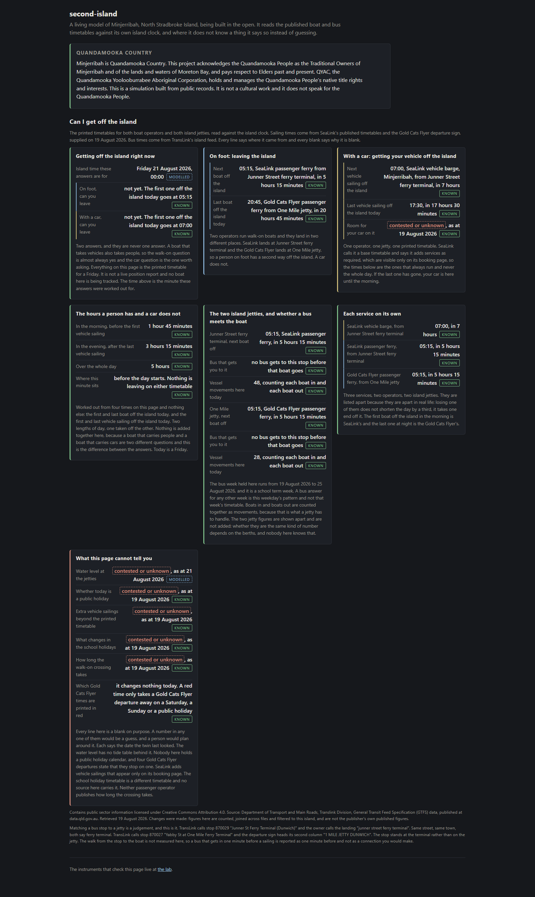
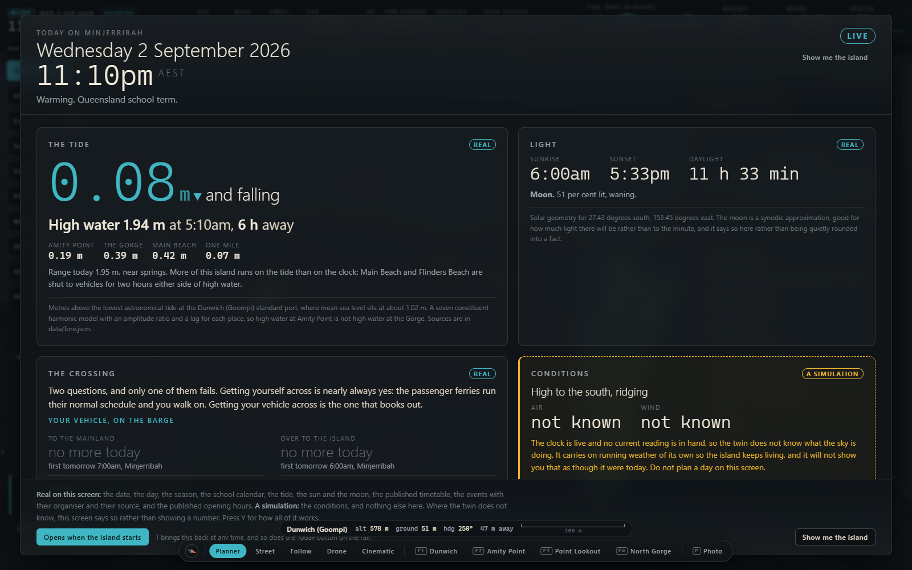

What a twin is
A digital twin is a computer model of Minjerribah, built from records the island already publishes. It has a clock. It gets things wrong.
Copernicus Sentinel-2, 13 July 2026 · sources
Four rules
Ask what the island looks like at four o'clock on a Friday and it answers for that minute. The first build set four rules. The second follows them.
Three labels
Every value on the first build's screen gets one of three labels.
The vehicle barge timetable. The roads. Which beaches are gazetted for vehicles, meaning a government notice declares them open. The tide window that shuts them.
How many people are on the island this afternoon. What a shop took today. How many koalas in a patch of forest. Nobody counted any of it. The twin does the sums.
The biggest proposal is a set of works under the sand. Not built, not approved, not funded, no site picked, nobody has consented. The badge stays on in every panel.
One piece of code hands out the labels, and the checker runs the same code. Nothing is a proposal on one screen and a fact on the next. Anything the code is not sure enough about never shows, and the build calls that held.
Thirty-one businesses carried this marker on 10 August 2026. Calling an open shop a proposal would be further from the truth.
Several directories still list a seafood business at Amity Point as trading. A resident said it had closed, and the correction went in on 6 May 2026. The record stays closed so the next pass does not add it back.
The second build's ferry page prints "contested or unknown, as at 19 August 2026". With no reading for air or wind, the first build's Today board prints "not known".
The second build's labels are known, modelled, proposed and contributed. Known means real.

How time works
A tick is one step of the clock. The first build ticks ten simulated minutes. The second ticks one island minute, 1,440 to a day, which is 24 hours times 60.
Simulated
The default. Every random choice grows from one starting number, so the same island turns up again on anybody's machine.
Live
The clock reads the real date and time once and stamps it into the record. Nothing is fetched from the internet. The island runs on Australian Eastern Standard Time all year. Queensland has had no daylight saving since the 1991-92 referendum was defeated.
Scrub
The sun, the moon, the tide at every station and the calendar can be worked out for any minute. They follow you. Next Tuesday's weather, the ramp queue and which shops are open cannot. Those stay at the island's present, tagged HELD.
Projection
"Nothing there is a record of anything." Run the minutes the island skipped and the projection turns into history. Say the simulation skipped Tuesday. You get a real sun and a real tide over an island that was not there. The twin draws only the stretches it has lived through.
The second build stamps two times on every fact: when it was true, and when the twin recorded it. Its ferry page names the minute it answered for, and says "no boat here is being tracked."

Where the twin stops
The first build: "Every business, road, beach, club, agency and ferry service in it is a real one, taken from a public record." Where a fact could not be found, the gap stays. Nobody has found a published tide table for the Dunwich port, so the second build's tide page shows a dated blank.
The simulation runs about two thousand residents, the size of a small country town. It gives them homes, jobs and relationships. The first build writes three files you can send on: a day of the island, a noticeboard notice, a rescue draft. "The twin never posts anything anywhere by itself."
The first build takes no cultural material, from any source or any contributor. Both builds open with an acknowledgement, on the about page with the licence.
Two builds, one idea
The first build is a living world you can fly around. The second started from scratch and answers one question from records it can show.